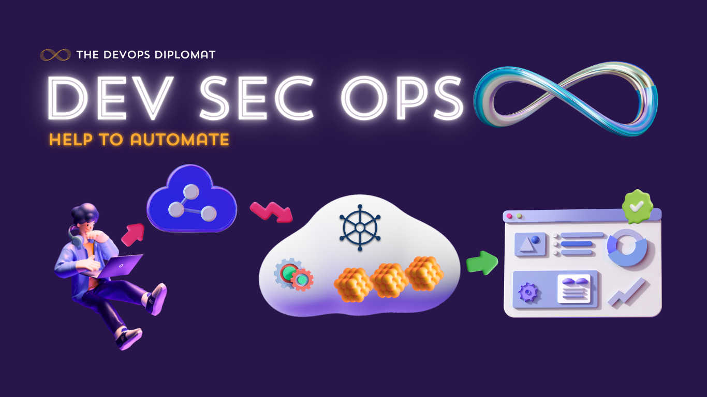

CI/CD & Dynamic Distributed Clusters:

AWS infrastructure using CI/CD Pipeline with Dynamic Distributed Clusters
Jenkins Pipelines:
I automated multiple deployment pipelines using Jenkins in my training
AWS-EKS:
This is one of my tasks from the Hybrid Multi Cloud training
GCP workshop:
Containerized and deployed microservices using Docker and Kubernetes
CI/CD with GitLab:
Integrated GitLab CI/CD pipelines for continuous integration and deployment
Ansible Automation:
Automated infrastructure provisioning and configuration using Ansible
GitHub Actions:
Implemented GitHub Actions for automating CI/CD workflows in cloud environments
Helm Charts:
Deployed Kubernetes applications using Helm for simplified deployment management
Monitoring with Prometheus & Grafana:
Set up monitoring dashboards to visualize metrics in real time
ELK Stack:
Centralized logging with Elasticsearch, Logstash, and Kibana for system monitoring
DevOps CICD:
Integration of Github, Jenkins, and Docker
MLOps integration:
The industry these days require continuous monitoring,upliftment...
Transfer Learning:
Used For Face Recognition
Flask Webserver:
createing flask webserver using docker, Flask and Python code
Multi-Cloud:
RDS(MySQL database) on AWS and Kubernetes Cluster on GCP
Wordpress & Mysql-AWS:
Using BASTION HOST and NAT Gateway
Launch WordPress:
using Mysql On AWS , Terraform and MySql...
Host your Web-Server:
on AWS Terraform, Using EFS for and S3...
Terraform And AWS:
Terraform is a tool which gives best feature to create, and manage resources
Prometheus and Grafana:
Prometheus & Grafana(real-time Metrics)...
Jenkins with Kubernetes:
DevOps task 3 by Vimal sir...